12 事务型 Saga
3 月 31 日，星期四，16:55
一个刮着大风的星期四傍晚，Austen 来到 Logan 的办公室。“Addison 刚把我打发过来，让我问你一个什么恐怖故事？”
Logan 停下手里的事情，抬起头。“这是在形容你这周末又要玩的疯狂极限运动吗？这次是什么？”
“已经是晚春了，所以我们一群人要去逐渐解冻的湖面上滑冰。我们会穿上连体服，因此其实是滑冰和游泳的混合运动。不过 Addison 说的完全不是这回事。我把工单工作流设计拿给 Addison 看，马上就被要求来找你，并告诉你我创造了一个恐怖故事。”
Logan 笑了。“哦，我明白了——你无意中撞上了恐怖故事 Saga 通信模式。你设计的是一个采用异步通信、原子事务和编排的工作流，对吧？”
“你怎么知道？”
“那就是恐怖故事 Saga 模式，准确地说，是反模式。我们从八种通用 Saga 模式开始分析，所以最好了解它们，因为每一种模式都有不同的权衡平衡。”
架构中的 Saga 概念早于微服务出现，最初关注的是在早期分布式架构中限制数据库锁的作用范围；普遍认为，这个概念来自 1987 年 ACM 会议论文集中的一篇论文。Chris Richardson 在《Microservices Patterns》（Manning Publications）以及他网站的“Saga Pattern”一节中，把微服务 Saga 模式描述为一系列本地事务：每次更新都会发布一个事件，从而触发序列中的下一次更新。如果其中任意更新失败，Saga 就会发出一系列补偿更新，撤销此前在 Saga 中完成的更改。
不过，回想第 2 章，这只是八种可能的 Saga 类型之一。本章将深入研究事务型 Saga 的内部工作原理及其管理方式，尤其关注错误发生时的处理。毕竟，分布式事务缺乏原子性（见第 10 章“分布式事务”），真正让它们变得有趣的，正是问题发生的时候。
12.1 事务型 Saga 模式
第 2 章介绍了一张矩阵，把架构师实现事务型 Saga 时必须选择的各个相交维度并列起来；表 表格 12.1 再次列出该矩阵。
| 模式名称 | 通信 | 一致性 | 协调 |
|---|---|---|---|
| 史诗 Saga（sao） | 同步 | 原子 | 协调 |
| 传话 Saga（sac） | 同步 | 原子 | 编排 |
| 童话 Saga（seo） | 同步 | 最终 | 协调 |
| 时间旅行 Saga（sec） | 同步 | 最终 | 编排 |
| 奇幻 Saga（aao） | 异步 | 原子 | 协调 |
| 恐怖故事 Saga（aac） | 异步 | 原子 | 编排 |
| 并行 Saga（aeo） | 异步 | 最终 | 协调 |
| 选集 Saga（aec） | 异步 | 最终 | 编排 |
我们为每种组合取了一个有趣的名称，都来自 Saga 的不同文学类型。不过，模式名称只是为了帮助区分各种可能性；我们不想让读者死记硬背模式名称与特征组合之间的对应关系。因此，每种 Saga 类型都带有三个字母的标记，按表 表格 12.1 三个维度的字母顺序表示对应取值。例如，史诗 Saga（sao）表示通信、一致性和协调分别采用同步（synchronous）、原子（atomic）和协调（orchestrated）。这些字母可以帮助读者更容易地把名称与特征组合联系起来。
架构师使用某些模式的频率会高于另一些模式，但八种模式都有合理用途，也各自具有不同的权衡。
下面用两种方式展示每一种通信组合：一是把三种力量在空间中的交点表现为三维图，二是用通用分布式服务展示示例工作流。我们把后一种称为同构图，以最通用的方式展示服务之间的交互，从而尽可能简单地表达架构概念。所有同构图都采用图 图 12.1 所示的通用符号。
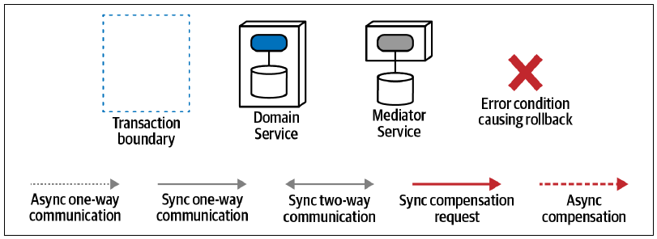
对于每一种架构模式，我们不会展示所有可能的交互，否则内容会变得重复；我们只识别并展示模式的差异化特征，也就是它的行为与其他模式有何不同。
12.1.1 史诗 Saga（sao）模式
这种通信方式就是许多架构师所理解的“传统”Saga 模式；由于采用协调式协调，它也称为协调式 Saga。它的维度关系见图 图 12.2。
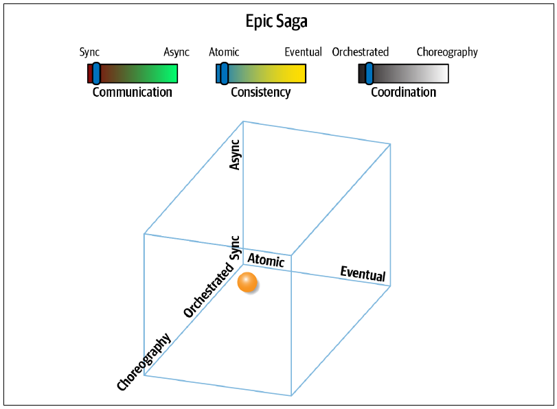
该模式采用同步通信、原子一致性和协调式协调。架构师选择它时，目标是模仿单体系统的行为。事实上，如果把单体系统加入图 图 12.2，它会位于原点（0, 0, 0），完全没有分布。因此，传统事务系统的架构师和开发人员最熟悉这种通信风格。
史诗 Saga（sao）模式的同构表示见图 图 12.3。
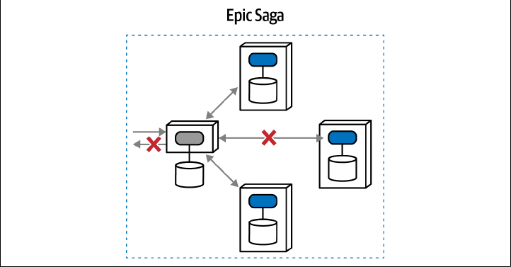
这里，一项协调器服务负责协调工作流，其中包含对三项服务的更新，并且期望它们以事务方式发生：三次调用要么全部成功，要么一次也不成功。如果其中一次调用失败，全部调用都失败，并恢复到以前的状态。在分布式架构中，架构师可以用多种方式解决这个协调问题，但每一种都很复杂；而且，这种事务会限制数据库的选择，并具有臭名昭著的故障模式。
许多刚入行或经验不足的架构师会以为，既然某个问题存在一种模式，它就一定代表干净利落的解决方案。然而，模式只是在识别共性，而不是保证问题可解。分布式事务很好地说明了这一点：习惯在非分布式系统中为事务建模的架构师，有时认为把这种能力迁移到分布式世界只是渐进式变化。事实上，分布式架构中的事务带来许多挑战，而且问题领域的语义耦合越复杂，这些挑战就会按比例加重。
考虑史诗 Saga（sao）模式的一种常见实现：使用补偿事务。补偿更新是在分布式事务范围内，撤销另一项服务已经执行的数据写入操作，例如反向更新、重新插入先前删除的行，或删除先前插入的行。补偿更新试图反转更改，使分布式数据源恢复到事务开始之前的原始状态，但这种方式充满复杂问题、挑战和权衡。
补偿事务模式会指定一项服务来监控请求的事务完整性，如图 图 12.4 所示。
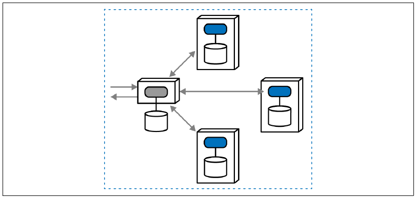
不过，与架构中的许多事情一样，真正造成困难的是错误情况。在补偿事务框架中，中介者监视调用是否成功；如果一个或多个请求失败，它就向其他服务发出补偿调用，如图 图 12.5 所示。
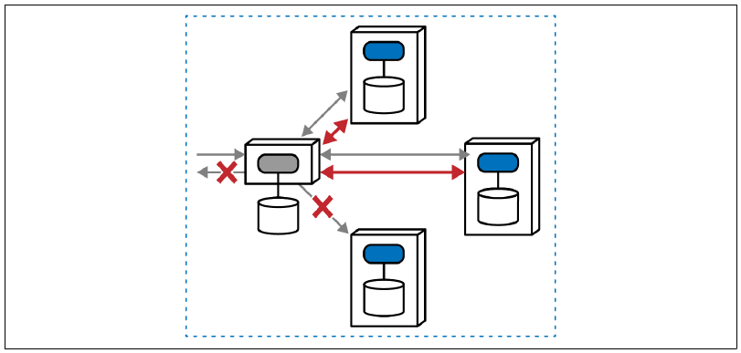
中介者既接收请求，也负责调解工作流。对前两项服务的同步调用都成功了，但调用最后一项服务时失败，原因可能来自各种领域或运行问题。史诗 Saga（sao）的目标是原子一致性，因此中介者必须使用补偿事务，请求另外两项服务撤销先前执行的操作，使总体状态恢复到事务开始之前。
这种模式应用十分广泛：它对熟悉的行为建模，并且拥有一个成熟的模式名称。许多架构师默认选择史诗 Saga（sao），一方面因为它让人联想到单体架构，另一方面也因为利益相关者会要求、甚至强制要求状态变化必须同步，而不顾技术约束。然而，其他动态量子耦合模式可能提供更好的权衡组合。
史诗 Saga（sao）的明显优势，是能够模仿单体系统的事务协调，并通过协调器明确表示工作流所有者。不过，它的缺点很多。首先，协调加事务性会影响性能、扩展能力、弹性等运行架构特性：协调器必须确认事务的所有参与者都已成功或失败，从而形成时序瓶颈。其次，用于实现分布式事务性的各种模式，例如补偿事务，容易遭遇种类繁多的故障模式和边界条件；撤销操作还会引入固有复杂度。分布式事务会带来一系列困难，因此最好尽可能避免。
史诗 Saga（sao）模式具有以下特征：
耦合程度
该模式在所有可能维度上都表现出极高耦合：同步通信、原子一致性和协调式协调。事实上，它是八种模式中耦合最高的一种。这并不意外，因为它模仿了高耦合单体系统的通信行为，但也因此在分布式架构中产生了许多问题。
复杂度
错误情况和其他高强度协调，再加上原子性要求，会给架构增加复杂度。不过，这种架构使用的同步调用缓解了部分复杂度，因为架构师不必担心调用过程中的竞态条件与死锁。
响应速度/可用性
协调会形成瓶颈，尤其当协调器还必须维持事务原子性时，响应速度会进一步下降。该模式采用同步调用，也会继续损害性能和响应能力。如果任意服务不可用，或者发生不可恢复的错误，该模式就会失败。
扩展能力/弹性
与响应速度类似，实现该模式所需的瓶颈和协调会使扩展及其他运行关注点变得困难。
史诗 Saga（sao）因为让人熟悉而广受欢迎，但无论从设计还是运行特性角度看，它都带来很多挑战，如表 表格 12.2 所示。
| 史诗 Saga（sao）模式 | 评分 |
|---|---|
| 通信 | 同步 |
| 一致性 | 原子 |
| 协调 | 协调 |
| 耦合 | 极高 |
| 复杂度 | 低 |
| 响应速度/可用性 | 低 |
| 扩展能力/弹性 | 极低 |
幸运的是，架构师不必默认采用那些看似熟悉、实则制造偶然复杂度的模式；还有很多具有不同权衡组合的选择。本章稍后的“Sysops Squad 案例：原子事务与补偿更新”会给出史诗 Saga（sao）的具体例子，展示它带来的部分复杂挑战以及应对方式。
12.1.2 传话 Saga（sac）模式
传话 Saga（sac）改变了史诗 Saga（sao）的一个维度：把协调方式从协调式改为编排式，如图 图 12.6 所示。
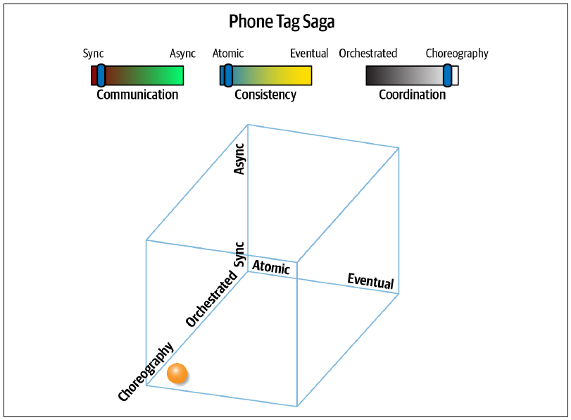
这个名称来自北美儿童熟悉的“传话游戏”（Telephone）：孩子们围成一圈，一个人把秘密悄悄告诉下一个人，再由对方传给再下一个，直到最后一个人说出最终版本。图 图 12.6 以编排取代协调，因此通信结构也相应改变，如图 图 12.7 所示。
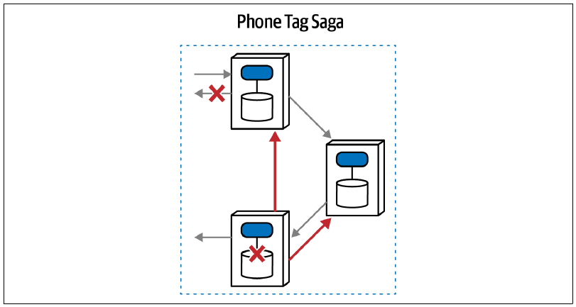
传话 Saga（sac）既要求原子性，又采用编排，这意味着架构师不会指定正式协调器。然而，原子性总需要某种程度的协调。在图 图 12.7 中，最先被调用的服务成为协调点，有时也称为前端控制器。它完成自己的工作后，把请求传给工作流中的下一项服务，如此持续到工作流成功。不过，如果发生错误，每项服务都必须内置逻辑，把补偿请求沿调用链反向传回。
架构目标既然是事务原子性，用于协调原子性的逻辑就必须存在于某个地方。因此，领域服务必须包含更多关于自己所参与工作流上下文的逻辑，包括错误处理和路由。对于复杂工作流，该模式中的前端控制器会变得与大多数中介者一样复杂，从而降低这种模式的吸引力和适用范围。因此，它通常用于需要更高扩展能力的简单工作流，但可能损害性能。
为什么编排比协调更有利于扩展等运行架构特性？即使通信仍然同步，编排也能减少瓶颈：在没有错误的情况下，工作流最后一项服务可以直接返回结果，从而获得更高吞吐量和更少的阻塞点。由于不需要协调，幸福路径的性能可能高于史诗 Saga（sao）。不过，没有中介者时，错误情况会慢得多：每项服务都必须沿调用链逐步回滚，这也会增加服务间耦合。
总体而言，传话 Saga（sac）没有中介者，因此扩展能力略好于史诗 Saga（sao）；中介者有时会成为限制性瓶颈。不过，在错误情况与其他工作流复杂性下，这种模式的性能更低。没有中介者时，工作流必须通过服务间通信来解决，会直接影响性能。
非协调式架构有一个很好的特征：不存在耦合奇点，也就是工作流所耦合的单一位置。即使该模式采用同步请求，幸福路径需要等待的条件仍然较少，因此能够扩展到更高规模。一般来说，降低耦合就能提高扩展能力。
不过，缺少协调虽然改善了可扩展性，却要求领域服务在承担本职职责之外管理工作流关注点，因而增加复杂度。面对复杂工作流，更高的复杂度与服务间通信量可能迫使架构师重新选择协调，并接受它的权衡。
传话 Saga（sac）的特征组合相当少见。通常，架构师选择编排时，也会选择异步通信；但某些情况适合这种组合：同步调用确保每项领域服务在调用下一项服务之前完成工作流中属于自己的部分，从而消除竞态条件。如果错误情况容易解决，或者领域服务能够使用幂等性与重试，那么与史诗 Saga（sao）相比，架构师可以利用该模式构建并行度更高的扩展方案。
传话 Saga（sac）模式具有以下特征：
耦合程度
该模式放松了史诗 Saga（sao）的一个耦合维度，采用编排式而不是协调式工作流，因此耦合略低。不过，事务要求保持不变，意味着工作流复杂度必须分散到各项领域服务中。
复杂度
该模式明显比史诗 Saga（sao）复杂，而且复杂度会与工作流的语义复杂度成线性比例增长：工作流越复杂，为弥补缺少协调器而必须出现在每项服务中的逻辑就越多。另一种做法是把工作流信息加入消息本身，形成一种印记耦合，以维持状态；第 13 章“用于工作流管理的印记耦合”会进一步介绍，但它会增加每项服务必须处理的上下文开销。
响应速度/可用性
协调越少，通常响应越快；但没有协调器时，该模式中的错误情况更难建模，需要通过回调和其他耗时活动进行更多协调。
扩展能力/弹性
没有协调器意味着瓶颈更少，通常能提高可扩展性，但提升幅度有限。该模式在三个维度中的两个仍然采用紧耦合，因此扩展能力并非亮点，特别是在错误经常发生时。
传话 Saga（sac）的评分见表 表格 12.3。
| 传话 Saga（sac）模式 | 评分 |
|---|---|
| 通信 | 同步 |
| 一致性 | 原子 |
| 协调 | 编排 |
| 耦合 | 高 |
| 复杂度 | 高 |
| 响应速度/可用性 | 低 |
| 扩展能力/弹性 | 低 |
传话 Saga（sac）更适合没有太多常见错误情况的简单工作流。它的部分特性优于史诗 Saga（sao），但缺少协调器带来的复杂度抵消了许多优势。
12.1.3 童话 Saga（seo）模式
典型童话故事情节简单、幸福美满，因此得名童话 Saga（seo）。该模式采用同步通信、最终一致性和协调，如图 图 12.8 所示。
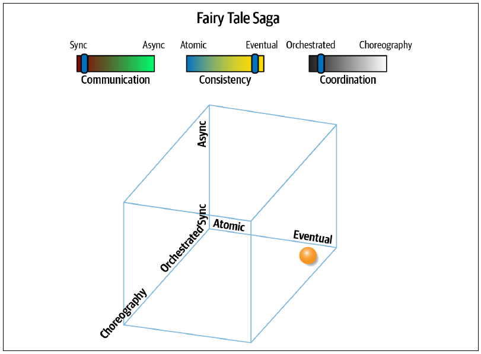
这种通信模式放松了棘手的原子性要求，为架构师设计系统提供更多选择。例如，如果某项服务暂时宕机，最终一致性允许先缓存变更，等服务恢复后再处理。童话 Saga（seo）的通信结构见图 图 12.9。
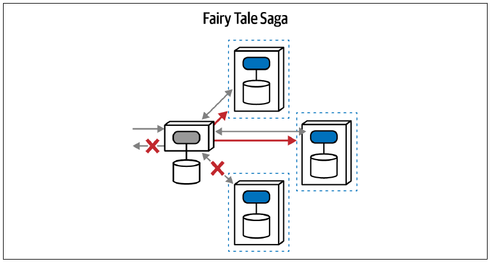
该模式由协调器协调请求、响应和错误处理。不过，协调器不负责管理事务；事务仍由每项领域服务自行负责（常见工作流示例见第 11 章）。因此，协调器可以管理补偿调用，却不要求它们发生在一个活动事务之内。
这是一种吸引力强得多的模式，在许多微服务架构中都很常见。中介者让工作流更容易管理；同步通信是两种通信方式中更容易的一种；最终一致性则移除了最困难的协调挑战，尤其是错误处理方面的挑战。
童话 Saga（seo）最吸引人的优点，是不需要整体事务。每项领域服务管理自己的事务行为，整体工作流则依赖最终一致性。
与许多其他模式相比，该模式通常具有很均衡的权衡：
耦合程度
童话 Saga（seo）的耦合较高，因为三个耦合驱动因素中有两个被推到最大：同步通信和协调式协调。不过，最容易引发耦合复杂度的因素——事务性——在该模式中被最终一致性取代。协调器仍须管理复杂工作流，但不再受到事务范围的严格约束。
复杂度
童话 Saga（seo）的复杂度非常低：它包含最方便的选择（协调与同步）和最宽松的限制（最终一致性）。所以它被称为童话 Saga——一个简单而结局美满的故事。
响应速度/可用性
这种通信风格通常响应更快。尽管调用仍然同步，中介者需要保存的进行中事务时效状态更少，因此更容易进行负载均衡。不过，性能的真正显著差异来自异步通信，后面的模式会加以展示。
扩展能力/弹性
耦合越少，通常扩展能力越高；去掉事务耦合后，每项服务能够更加独立地扩展。
童话 Saga（seo）的评分见表 表格 12.4。
| 童话 Saga（seo）模式 | 评分 |
|---|---|
| 通信 | 同步 |
| 一致性 | 最终 |
| 协调 | 协调 |
| 耦合 | 高 |
| 复杂度 | 极低 |
| 响应速度/可用性 | 中 |
| 扩展能力/弹性 | 高 |
如果架构师能够利用最终一致性，这种模式就很有吸引力：它组合了最容易处理的活动部件与最少的可怕限制，因此深受架构师欢迎。
12.1.4 时间旅行 Saga（sec）模式
时间旅行 Saga（sec）采用同步通信、最终一致性和编排式工作流。换句话说，它避开中央中介者，把工作流职责完全交给参与其中的领域服务，如图 图 12.10 所示。
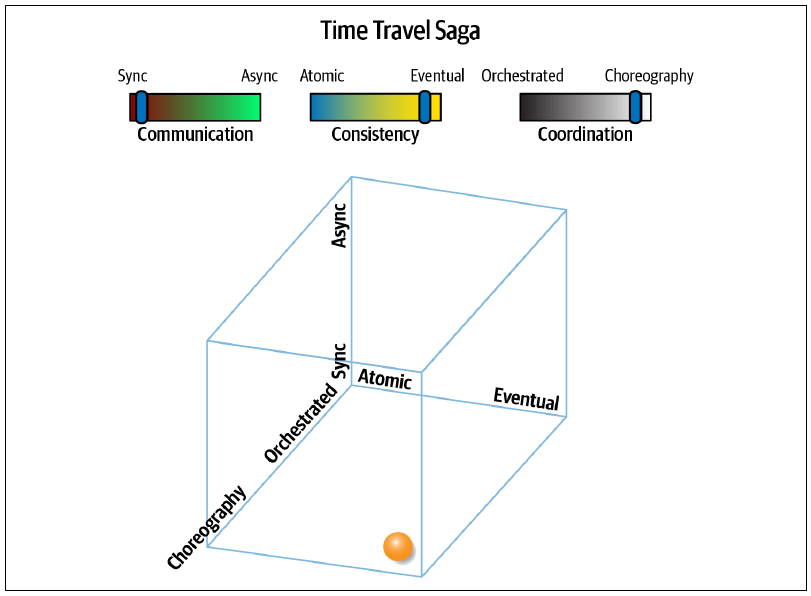
它的结构拓扑体现出缺少协调器的特征，如图 图 12.11 所示。
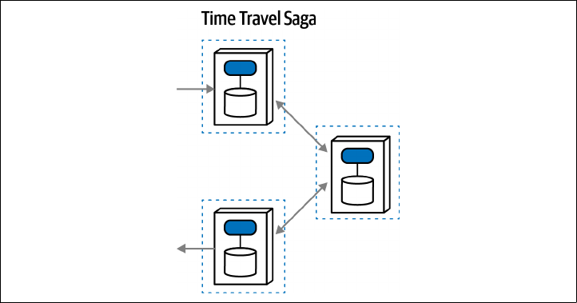
在这个工作流中，每项服务接收请求、执行操作，再把请求转发给另一项服务。这种架构可以实现责任链设计模式或管道与过滤器架构风格，也就是任何由单向步骤序列组成的工作流。该模式中的每项服务都“拥有”自己的事务性，因此架构师必须把工作流错误情况设计进领域设计。总体而言，由于没有中介者提供内置协调，工作流复杂度与编排方案的复杂度成正比：工作流越复杂，编排就越困难。它之所以称为时间旅行 Saga（sec），是因为从时间角度看，一切都已解耦：每项服务拥有自己的事务上下文，工作流一致性随时间逐渐形成；根据交互设计，状态最终会变得一致。
时间旅行 Saga（sec）没有整体事务，因此工作流更容易建模；不过，缺少协调器意味着每项领域服务必须包含大部分工作流状态和信息。与所有编排方案一样，工作流复杂度和协调器效用之间存在直接关系，所以这种模式最适合简单工作流。
对于需要高吞吐量的方案，该模式特别适合“发后即忘”式工作流，例如电子数据摄取、批量事务等。不过，因为没有协调器，领域服务必须自行处理错误情况与协调。
低耦合提高了该模式的可扩展性；只有加入异步通信，才能进一步提升扩展能力，如选集 Saga（aec）。不过，该模式没有整体事务协调，架构师必须额外投入精力同步数据。
时间旅行 Saga（sec）的定性评估如下：
耦合程度
时间旅行 Saga（sec）的耦合程度处于中等范围。没有协调器降低了耦合，但同步通信仍然保留部分耦合，两者相互平衡。与所有最终一致性模式一样，缺少事务耦合也缓解了许多数据关注点。
复杂度
去掉事务性降低了该模式的复杂度。这是一种近似专用的模式，极其适合高吞吐量的单向通信架构，其耦合程度也与这种架构风格十分匹配。
响应速度/可用性
该模式的响应速度评分为中等：用于前述专门用途的系统时相当高，但涉及复杂错误处理时会很低。由于不存在协调器，发生错误时，每项领域服务都必须处理恢复最终一致性的场景；同步调用会产生大量开销，影响响应速度与性能。
扩展能力/弹性
该架构模式提供极好的扩展能力和弹性；只有改为异步通信才能更进一步，参见选集 Saga（aec）。
时间旅行 Saga（sec）的评分见表 表格 12.5。
| 时间旅行 Saga（sec）模式 | 评分 |
|---|---|
| 通信 | 同步 |
| 一致性 | 最终 |
| 协调 | 编排 |
| 耦合 | 中 |
| 复杂度 | 低 |
| 响应速度/可用性 | 中 |
| 扩展能力/弹性 | 高 |
时间旅行 Saga（sec）为采用更复杂、但最终扩展能力更强的选集 Saga（aec）提供了一个入口。架构师和开发人员普遍认为，同步通信更容易推理、实现和调试；如果这种模式已经提供足够的可扩展性，团队就不必转向更复杂但更能扩展的替代方案。
12.1.5 奇幻 Saga（aao）模式
奇幻 Saga（aao）采用原子一致性、异步通信和协调式协调，如图 图 12.12 所示。
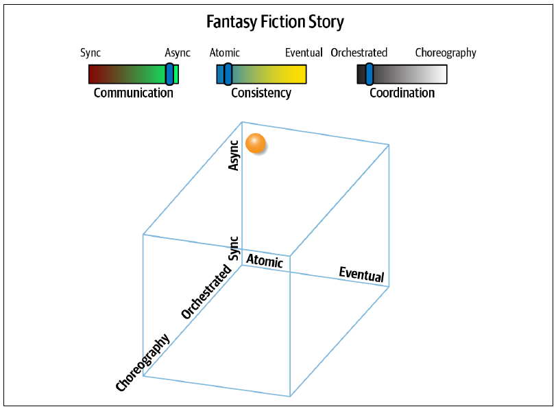
图 图 12.13 的结构表示开始显露出该模式的困难。
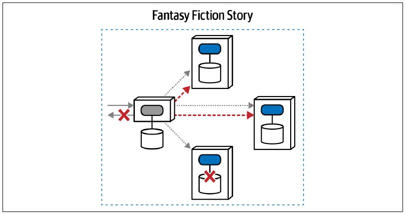
某种架构力量组合存在，并不意味着它一定构成有吸引力的模式；不过，这种相对不太合理的组合仍有用途。它除通信方式之外，在所有方面都与史诗 Saga（sao）相似：这里采用异步通信，而不是同步通信。传统上，架构师提高分布式系统响应速度的一种方式就是使用异步通信，让操作并行而不是串行执行。因此，这似乎是改善史诗 Saga（sao）感知性能的好办法。
然而，异步并不是一个简单变化。它会给架构增加许多层复杂度，尤其是协调方面，要求中介者复杂得多。例如，假设事务工作流 Alpha 启动；一切都是异步的，因此 Alpha 仍在等待时，事务工作流 Beta 又启动。现在，中介者必须跟踪所有处于等待状态的进行中事务。
情况还会变得更糟。假设工作流 Gamma 启动，但它对第一项领域服务的调用依赖仍未完成的 Alpha 结果，架构师应如何建模？这并非不可能，但复杂度会不断增长。
给协调式工作流加入异步通信，就把异步事务状态带入问题，打破了关于串行顺序的假设，并引入死锁、竞态条件及许多其他并行系统挑战。
该模式面临以下挑战：
耦合程度
该模式的耦合程度极高：同时使用协调器和原子性，却又采用异步通信。异步通信强加竞态条件及其他乱序问题，使协调变得更加困难。
复杂度
耦合如此棘手，复杂度也随之升高。不仅存在设计复杂度，迫使架构师开发过度复杂的工作流；还存在大规模异步工作流的调试复杂度与运行复杂度。
响应速度/可用性
该模式试图跨调用协调事务，因此整体响应速度会受到影响；如果一项或多项服务不可用，表现会极差。
扩展能力/弹性
事务系统几乎不可能实现高扩展能力，即使采用异步通信也是如此。相似的并行 Saga（aeo）把原子一致性改为最终一致性，扩展能力要好得多。
奇幻 Saga（aao）的评分见表 表格 12.6。
| 奇幻 Saga（aao）模式 | 评分 |
|---|---|
| 通信 | 异步 |
| 一致性 | 原子 |
| 协调 | 协调 |
| 耦合 | 高 |
| 复杂度 | 高 |
| 响应速度/可用性 | 低 |
| 扩展能力/弹性 | 低 |
遗憾的是，这种模式比它应有的流行程度更高，主要源自一个错误方向：在维持事务性的同时改善史诗 Saga（sao）的性能。通常，更好的选择是并行 Saga（aeo）。
12.1.6 恐怖故事 Saga（aac）模式
八种模式中总有一种是最糟糕的组合。名副其实的恐怖故事 Saga（aac）采用异步通信、原子一致性和编排式协调，如图 图 12.14 所示。
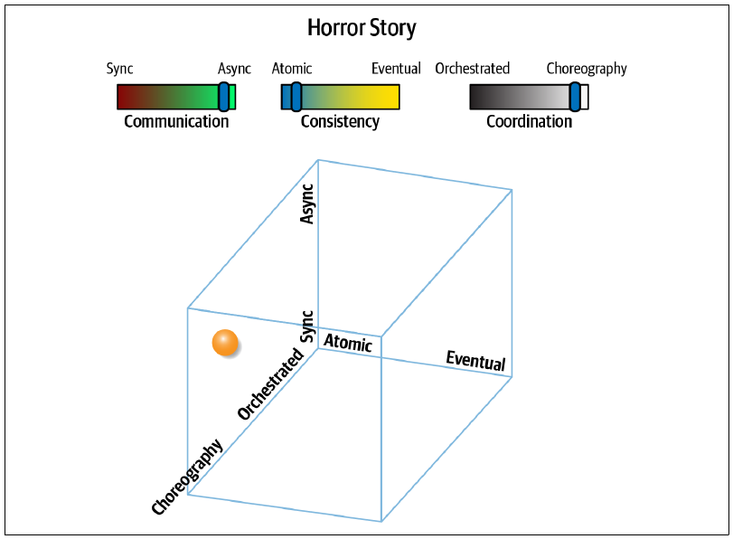
为什么这种组合如此可怕？它把一致性上最严格的耦合要求（原子性）与两种最宽松的耦合风格（异步与编排）混在一起。其结构通信见图 图 12.15。
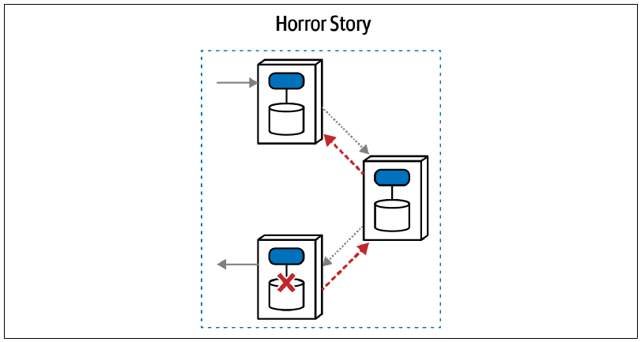
该模式没有中介者来管理多项服务之间的事务一致性，却又使用异步通信。因此，每项领域服务都必须跟踪多个等待中事务的撤销信息；因为异步性，这些事务还可能乱序，并且在发生错误时必须彼此协调。随便举一个可怕的例子：事务 Alpha 启动，尚未完成时事务 Beta 又启动；随后，Alpha 中的一次调用失败。现在，采用编排的服务必须倒转触发顺序，沿途撤销事务中每个可能乱序的元素。
错误情况的数量与复杂度，使这成为一种令人望而生畏的选择。架构师为什么会选择它？异步通信能提升性能，很有吸引力；但架构师可能同时试图维持事务完整性，而后者拥有无数故障模式。更好的选择通常是去掉整体事务性的选集 Saga（aec）。
恐怖故事 Saga（aac）的定性评估如下：
耦合程度
令人意外的是，该模式的耦合程度并非最差；这项“殊荣”属于史诗 Saga（sao）。恐怖故事虽然试图实现最糟糕的单项耦合——事务性，却放松了另外两个维度：既没有中介者，也没有会增加耦合的同步通信。
复杂度
正如其名，该模式的复杂度确实极其可怕，是所有模式中最糟糕的：它要求用最难的两个因素组合（异步与编排）实现最严格的要求（事务性）。
扩展能力/弹性
该模式比拥有中介者的模式扩展得更好，异步通信也允许更多工作并行执行。
响应速度/可用性
与其他要求整体事务的模式类似，该模式响应速度较低。工作流协调需要大量服务间“闲聊”，损害性能与响应能力。
恐怖故事 Saga（aac）的权衡见表 表格 12.7。
| 恐怖故事 Saga（aac）模式 | 评分 |
|---|---|
| 通信 | 异步 |
| 一致性 | 原子 |
| 协调 | 编排 |
| 耦合 | 中 |
| 复杂度 | 极高 |
| 响应速度/可用性 | 低 |
| 扩展能力/弹性 | 中 |
名副其实的恐怖故事 Saga（aac），往往源自一位出于善意的架构师：先从史诗 Saga（sao）开始，因为复杂工作流导致性能缓慢，随后意识到异步通信和编排可以改善性能。然而，这种思路没有考虑问题空间中所有相互纠缠的维度。孤立来看，异步通信的确改善性能；但作为架构师，我们不能把它与一致性、协调等其他架构维度的纠缠割裂开来。
12.1.7 并行 Saga（aeo）模式
并行 Saga（aeo）以“传统”史诗 Saga（sao）为基础，但有两项关键差异放松了限制，使它更容易实现：异步通信与最终一致性。它的维度图见图 图 12.16。
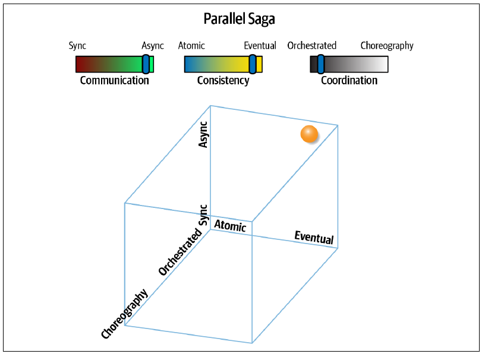
史诗 Saga（sao）中最困难的目标围绕事务和同步通信展开，两者都会造成瓶颈与性能下降。图 图 12.16 展示了该模式如何放松这两项约束。
并行 Saga（aeo）的同构表示见图 图 12.17。
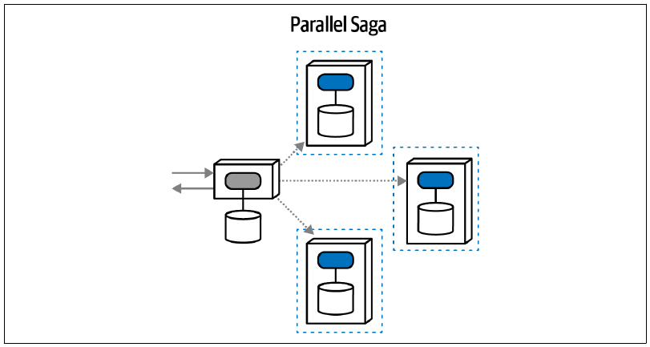
该模式使用中介者，因此适合复杂工作流；同时又使用异步通信，能够获得更好的响应速度与并行执行能力。一致性由领域服务负责，可能需要在后台或由中介者驱动来同步共享数据。与其他需要协调的架构问题一样，中介者在这里非常有用。
例如，如果执行工作流时发生错误，中介者可以向每项相关领域服务发送异步消息，补偿失败的变更；补救措施可能包括重试、数据同步或许多其他方式。
当然，放松约束意味着必须交换掉某些好处，这正是软件架构的本质。缺少事务性会给中介者增加更多负担，用于解决错误及其他工作流问题。异步通信虽然改善响应速度，却使时序和同步问题更难解决；竞态条件、死锁、队列可靠性以及许多其他分布式架构难题都存在于这个空间。
并行 Saga（aeo）的定性评分如下：
耦合程度
该模式耦合程度较低，把会加强耦合的事务力量限制在各项领域服务内部。它还采用异步通信，进一步解除服务与等待状态之间的耦合，允许更多并行处理，但也给架构师的耦合分析增加了时间维度。
复杂度
并行 Saga（aeo）的复杂度同样较低，反映出前述耦合的减轻。架构师相当容易理解这种模式，而且协调让工作流与错误处理设计更简单。
扩展能力/弹性
异步通信与较小的事务边界，使该架构能够很好地扩展，并在服务之间保持良好隔离。例如，在微服务架构中，部分面向公众的服务可能需要更高扩展能力与弹性，而后台服务不需要扩展，却要求更高安全性。把事务隔离在领域级别，让架构能够围绕领域概念扩展。
响应速度/可用性
由于不存在协调式事务，并且采用异步通信，该架构响应速度很高。事实上，每项服务都维持自己的事务上下文，所以该架构很适合服务之间性能特征差异极大的情况，允许架构师根据需求让某些服务比其他服务扩展得更多。
并行 Saga（aeo）的评分见表 表格 12.8。
| 并行 Saga（aeo）模式 | 评分 |
|---|---|
| 通信 | 异步 |
| 一致性 | 最终 |
| 协调 | 协调 |
| 耦合 | 低 |
| 复杂度 | 低 |
| 响应速度/可用性 | 高 |
| 扩展能力/弹性 | 高 |
总体而言，并行 Saga（aeo）为许多场景提供了很有吸引力的权衡组合，尤其适合需要高扩展能力的复杂工作流。
12.1.8 选集 Saga（aec）模式
选集 Saga（aec）的特征与传统史诗 Saga（sao）完全相反：它采用异步通信、最终一致性和编排式协调，是所有模式中耦合最低的典型。它的维度视图见图 图 12.18。
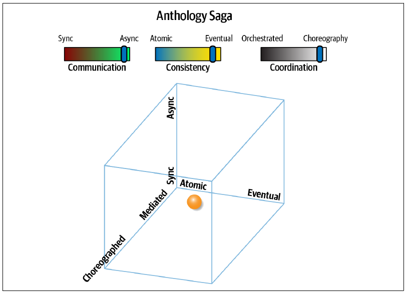
选集模式不使用协调器，而是通过消息队列向其他领域服务发送异步消息，如图 图 12.19 所示。
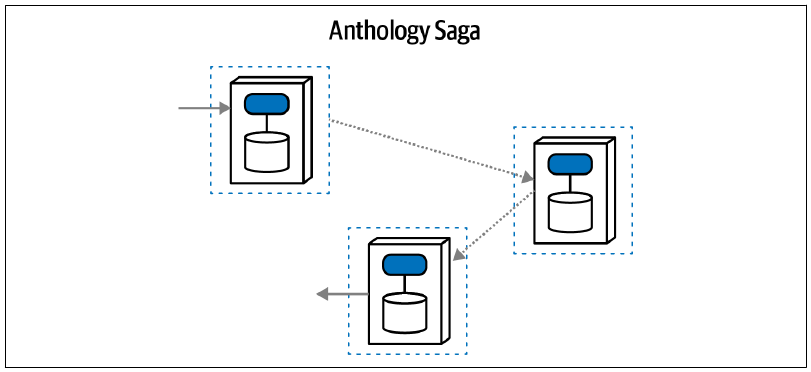
可以看到，每项服务都维持自己的事务完整性，同时不存在协调器；因此，每项领域服务被迫包含更多关于自己所参与工作流的上下文，包括错误处理及其他协调策略。
缺少协调器会让服务更加复杂，但也带来高得多的吞吐量、可扩展性、弹性及其他有利的运行架构特性。该架构不存在瓶颈或耦合阻塞点，因此响应速度和扩展能力都很高。
不过，这种模式不太适合复杂工作流，尤其不适合解决数据一致性错误。虽然没有协调器似乎无法携带状态，但也可以像相似的传话 Saga（sac）一样，利用印记耦合携带工作流状态；第 13 章“用于工作流管理的印记耦合”会进一步介绍。
该模式最适合简单、近似线性的工作流，并且架构师希望获得很高的处理吞吐量。它在高性能和高扩展能力方面拥有最大潜力，因此当两者是系统的关键驱动因素时，很有吸引力。不过，如此高的解耦程度会使协调变得困难；面对复杂或关键工作流，代价甚至高到无法接受。
这项以短篇小说集为灵感的选集 Saga（aec）具有以下特征：
耦合程度
该模式的耦合程度是所有力量组合中最低的，形成高度解耦的架构，非常适合高扩展能力和高弹性。
复杂度
耦合虽然极低，复杂度却相应很高，尤其面对复杂工作流时更是如此；这类工作流通常很适合使用协调器，但该模式恰恰没有协调器。
扩展能力/弹性
该模式在扩展能力和弹性类别中获得最高评分，与它整体缺少耦合的特征相符。
响应速度
该架构没有速度限制因素（事务一致性、同步通信），并且采用响应加速因素（编排式协调），因此响应速度很高。
选集 Saga（aec）的评分见表 表格 12.9。
| 选集 Saga（aec）模式 | 评分 |
|---|---|
| 通信 | 异步 |
| 一致性 | 最终 |
| 协调 | 编排 |
| 耦合 | 极低 |
| 复杂度 | 高 |
| 响应速度/可用性 | 高 |
| 扩展能力/弹性 | 极高 |
选集 Saga（aec）非常适合吞吐量极高，并且错误情况简单或很少发生的通信。例如，管道与过滤器架构与该模式完全契合。
架构师可以用多种方式实现本节介绍的模式。例如，可以利用补偿更新，以原子事务管理事务型 Saga；也可以采用最终一致性管理事务状态。本节展示了每种方式的优缺点，帮助架构师决定采用哪一种事务型 Saga 模式。
12.2 状态管理与最终一致性
状态管理与最终一致性利用有限状态机（见下一节“Saga 状态机”），持续掌握事务型 Saga 的当前状态，并通过重试、自动修正或人工修正，最终消除错误情况。为了说明这种方式，考虑图 图 12.20 所示工单完成示例的童话 Saga（seo）实现。
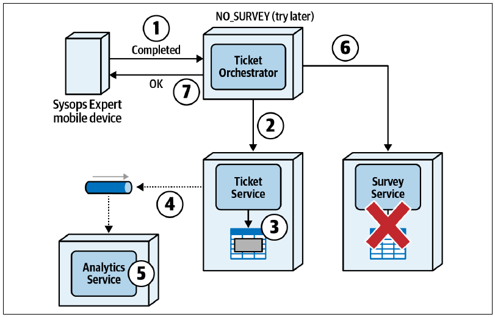
注意，在分布式事务的作用范围内，调查服务不可用。不过，这种 Saga 不会发出补偿更新，而是把 Saga 状态改为 NO_SURVEY，再向 Sysops 专家发送成功响应，即图中的第 7 步。随后，工单协调器服务以异步方式在后台通过重试与错误分析来解决问题。如果无法解决，它会把错误发送给管理员或主管，由人工修复和处理。
通过管理 Saga 状态而不是发出补偿更新，最终用户（本例中的 Sysops Squad 专家）不必关心调查没有发送给客户；那是工单协调器服务的责任。从最终用户角度看，响应速度很好，而且系统处理错误时，用户可以继续执行其他任务。
12.2.1 Saga 状态机
状态机是一种描述分布式架构中所有可能路径的模式。它总是从启动事务型 Saga 的起始状态开始，然后包含转换状态，以及转换发生时应该执行的相应操作。
为了说明 Saga 状态机的工作方式，考虑客户在 Sysops Squad 系统中创建新故障工单的工作流：
- 客户在系统中输入新的故障工单。
- 工单被分配给下一个可用的 Sysops Squad 专家。
- 工单被路由到专家的移动设备。
- 专家收到工单并处理问题。
- 专家完成维修，把工单标记为已完成。
- 系统向客户发送调查。
该事务型 Saga 中可能存在的各个状态及其转换操作见图 图 12.21。事务型 Saga 从 START 节点开始，该节点表示 Saga 入口；在表示 Saga 出口的 CLOSED 节点终止。
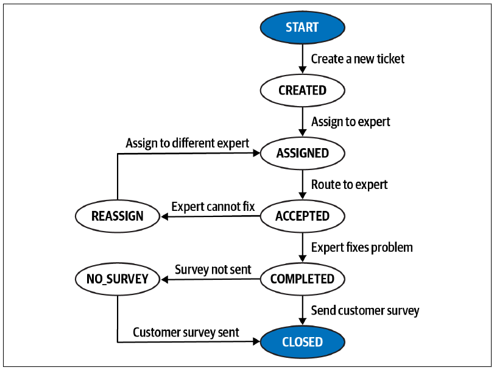
下面更详细地说明该事务型 Saga，以及每个状态中发生的状态转换操作。
START
事务型 Saga 从客户在系统中输入新的故障工单开始。系统验证客户的支持计划和工单数据。工单插入数据库的工单表后，Saga 状态变为 CREATED，并通知客户工单已成功创建。这次状态转换只有这一种可能结果；该状态内出现任何错误，都会阻止 Saga 启动。
CREATED
工单成功创建后，会被分配给一名 Sysops Squad 专家。如果没有可用专家，工单会保持等待状态，直到专家可用。专家分配完成后，Saga 状态变为 ASSIGNED。这次状态转换也只有一种结果：在工单能够完成分配之前，一直保持 CREATED 状态。
ASSIGNED
工单分配给专家后，唯一可能的结果就是把工单路由给该专家。这里假设分配算法已经找到专家，并确认其可用。如果因为无法找到专家或专家不可用而无法路由，Saga 会保持这一状态，直到路由成功。路由完成后，专家必须确认已经收到工单；随后，事务型 Saga 状态变为 ACCEPTED。这也是该状态转换的唯一可能结果。
ACCEPTED
Sysops Squad 专家接受工单后，存在两种可能状态：COMPLETED 或 REASSIGN。专家完成维修并把工单标记为“已完成”后，Saga 状态变为 COMPLETED。不过，如果工单由于某种原因分配错误，或者专家无法完成维修，专家会通知系统，状态变为 REASSIGN。
REASSIGN
进入该 Saga 状态后，系统会把工单重新分配给另一位专家。与 CREATED 状态一样，如果没有专家可用，事务型 Saga 会保持 REASSIGN，直到专家完成分配。找到另一位专家并再次分配工单后，状态变为 ASSIGNED，等待另一位专家接受。这是该状态转换的唯一可能结果；工单分配给专家之前，Saga 会一直保持此状态。
COMPLETED
专家完成工单后，存在两种可能状态：CLOSED 或 NO_SURVEY。工单处于此状态时，系统会向客户发送调查，请其为专家和服务评分；随后 Saga 状态变为 CLOSED，结束事务型 Saga。如果调查服务不可用，或者发送调查时发生错误，状态就变为 NO_SURVEY，表示问题已经修复，但调查未发送给客户。
NO_SURVEY
在这个错误情况状态下，系统会继续尝试向客户发送调查。发送成功后，状态变为 CLOSED，标志事务型 Saga 结束。这是该状态转换唯一可能的结果。
许多情况下，把所有可能状态转换及相应转换操作列进表格会很有用。开发人员可以利用该表，在协调器服务中实现状态转换触发器及可能的错误情况；如果采用编排，也可以在各项相关服务中实现。表 表格 12.10 列出了所有可能状态，以及状态转换发生时触发的操作。
| 起始状态 | 转换状态 | 事务操作 |
|---|---|---|
START |
CREATED |
把工单分配给专家 |
CREATED |
ASSIGNED |
把工单路由给已分配专家 |
ASSIGNED |
ACCEPTED |
专家修复问题 |
ACCEPTED |
COMPLETED |
向客户发送调查 |
ACCEPTED |
REASSIGN |
重新分配给另一位专家 |
REASSIGN |
ASSIGNED |
把工单路由给已分配专家 |
COMPLETED |
CLOSED |
工单 Saga 完成 |
COMPLETED |
NO_SURVEY |
向客户发送调查 |
NO_SURVEY |
CLOSED |
工单 Saga 完成 |
分布式事务工作流究竟使用补偿更新还是状态管理，取决于具体情况，以及响应速度与一致性之间的权衡分析。无论使用哪种技术管理分布式事务中的错误，都应该了解并管理分布式事务的状态。
表 表格 12.11 总结了采用状态管理，而不是使用补偿更新的原子分布式事务时所涉及的权衡。
12.2.1.1 权衡
| 优点 | 缺点 |
|---|---|
| 响应速度好 | 发生错误时，数据可能不同步 |
| 错误对最终用户影响较小 | 最终一致可能需要一段时间 |
12.3 Saga 管理技术
分布式事务并不是可以简单“丢进”系统里的东西。它们无法像 ACID 事务管理器那样，通过某种框架或产品下载或购买；必须由开发人员和架构师设计、编码并维护。
我们喜欢用来帮助管理分布式事务的一种技术，是利用注解（Java）、自定义特性（C#），或其他语言中的类似构造。这些语言构造本身不包含实际功能，却提供了一种程序化方式，用于捕获并记录系统中的事务型 Saga，也能把服务与事务型 Saga 关联起来。
示例 列表 12.1（Java）和示例 列表 12.2（C#）展示了这些注解与自定义特性的实现方式。两种实现都把事务型 Saga（NEW_TICKET、CANCEL_TICKET 等）放进 Transaction 枚举，从而在源代码中提供一个统一位置，列出并记录应用上下文中的各种 Saga。
@Retention(RetentionPolicy.RUNTIME)
@Target(ElementType.TYPE)
public @interface Saga {
public Transaction[] value();
public enum Transaction {
NEW_TICKET,
CANCEL_TICKET,
NEW_CUSTOMER,
UNSUBSCRIBE,
NEW_SUPPORT_CONTRACT
}
}[AttributeUsage(AttributeTargets.Class)]
class Saga : System.Attribute {
public Transaction[] transaction;
public enum Transaction {
NEW_TICKET,
CANCEL_TICKET,
NEW_CUSTOMER,
UNSUBSCRIBE,
NEW_SUPPORT_CONTRACT
};
}定义完成后，可以利用这些注解或特性识别参与事务型 Saga 的服务。例如，示例 列表 12.3 表明，调查服务（以 SurveyServiceAPI 类作为服务入口）参与 NEW_TICKET Saga；工单服务（以 TicketServiceAPI 类作为服务入口）则参与两个 Saga：NEW_TICKET 和 CANCEL_TICKET。
@ServiceEntrypoint
@Saga(Transaction.NEW_TICKET)
public class SurveyServiceAPI {
...
}
@ServiceEntrypoint
@Saga({Transaction.NEW_TICKET,
Transaction.CANCEL_TICKET})
public class TicketServiceAPI {
...
}注意，NEW_TICKET Saga 同时包含调查服务与工单服务。这对开发人员很有价值：修改特定工作流或 Saga 时，可以据此定义测试范围；修改事务型 Saga 中某项服务时，也能知道可能影响哪些其他服务。
借助这些注解和自定义特性，架构师与开发人员可以编写简单的命令行界面（CLI）工具，遍历代码库或源代码仓库，实时提供 Saga 信息。例如，使用简单的自定义代码遍历工具，开发人员、架构师甚至业务分析师都可以查询 NEW_TICKET Saga 涉及哪些服务：
$ ./sagatool.sh NEW_TICKET -services
-> Ticket Service
-> Assignment Service
-> Routing Service
-> Survey Service
$自定义代码遍历工具可以检查应用上下文中每个包含 @ServiceEntrypoint 自定义注解（或特性）的类文件，再检查 @Saga 自定义注解中是否存在特定 Saga，本例中是 Transaction.NEW_TICKET。这种工具并不难编写，却能为管理事务型 Saga 提供宝贵信息。
12.4 Sysops Squad 案例：原子事务与补偿更新
4 月 5 日，星期二，09:44
一早，Addison 和 Austen 就在那间狭长的会议室里与 Logan 会面，彻底讨论新微服务架构中的事务问题。
Logan 先开口：“我知道，并非所有人都理解你们读到的内容怎样应用到我们正在做的事情上。所以，我准备了一些工作流和示意图，帮助大家形成一致认识。今天讨论的是在系统中把工单标记为已完成。在这个工作流中，Sysops Squad 专家完成工作后，用移动设备上的应用把工单标记为‘已完成’。我想谈谈史诗 Saga 模式，以及补偿更新带来的问题。我画了图 图 12.22 来说明这个工作流，大家都能看见吗？”
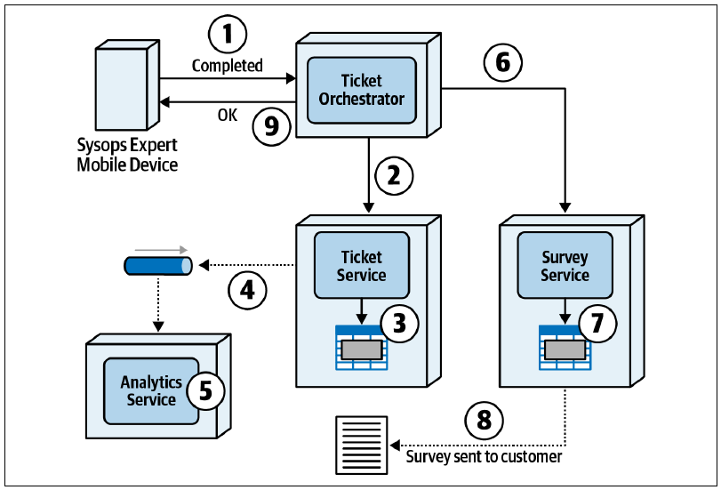
Logan 继续说：“我还列出了每一步。图中的圆圈编号与工作流步骤对应。”
- Sysops Squad 专家在移动设备应用中把工单标记为已完成，工单协调器服务同步接收该操作。
- 工单协调器服务向工单服务发送同步请求，把工单状态从“处理中”改为“已完成”。
- 工单服务把数据库表中的工单状态更新为“已完成”，并提交更新。
- 作为工单完成流程的一部分，工单服务把工单信息（例如维修时间、等待时间、持续时长等）异步发送到队列，等待分析服务提取。发送后，工单服务向工单协调器服务返回确认，表明更新已完成。
- 几乎同时，分析服务异步接收更新后的工单分析数据，并开始处理工单信息。
- 工单协调器服务随后向调查服务发送同步请求，要求准备客户调查并发送给客户。
- 调查服务把调查信息（客户、工单信息与时间戳）插入表中，并提交插入操作。
- 调查服务通过电子邮件把调查发送给客户，再向工单协调器服务返回确认，表明调查处理已完成。
- 最后，工单协调器服务向 Sysops Squad 专家的移动设备返回响应，说明工单完成处理已经结束。此后，专家可以选择分配给自己的下一张故障工单。
“哇，这真的很有帮助。你花了多长时间做这些？”Addison 问。
“时间可不短，但它确实派上了用场。你们不是唯一对这些活动部件如何协同工作感到困惑的小组。这就是软件架构的难点。大家都理解工作流的基本过程了吗？”
看到众人纷纷点头，Logan 继续说：“补偿更新最先出现的问题之一，是分布式事务内部不存在事务隔离（见第 10 章‘分布式事务’）。因此，分布式事务完成之前，其他服务可能已经根据事务范围内更新的数据采取了行动。为了说明这个问题，考虑图 图 12.23 中同一个史诗 Saga 示例：Sysops Squad 专家把工单标记为已完成，但这次调查服务不可用。此时，系统向工单服务发送补偿更新（图中第 7 步），撤销原来的更新，把工单状态从‘已完成’改回‘处理中’（图中第 8 步）。”
“还要注意，图 图 12.23 中这是一个原子分布式事务，因此系统随后会向 Sysops Squad 专家返回错误，说明操作没有成功，请再次尝试。现在问你们一个问题：为什么调查没有发送出去，要由 Sysops Squad 专家来操心？”
Austen 想了一会儿。“可这不是单体工作流的一部分吗？如果我没记错，所有事情都发生在同一个事务里。”
“对，但我一直觉得这很奇怪，只是从没说出来，”Addison 说，“我不明白专家为什么要操心调查。专家只想继续处理分配给自己的下一张工单。”
“没错，”Logan 说，“这就是原子分布式事务的问题：最终用户被不必要地语义耦合到业务流程。不过，图 图 12.23 还说明了分布式事务缺乏事务隔离的问题。原始更新把工单标记为已完成时，工单服务已经把工单信息异步发送到队列（图中第 4 步），由分析服务处理（第 5 步）。可是，向工单服务发出补偿更新（第 7 步）时，分析服务早在第 5 步就已经处理了工单信息。”
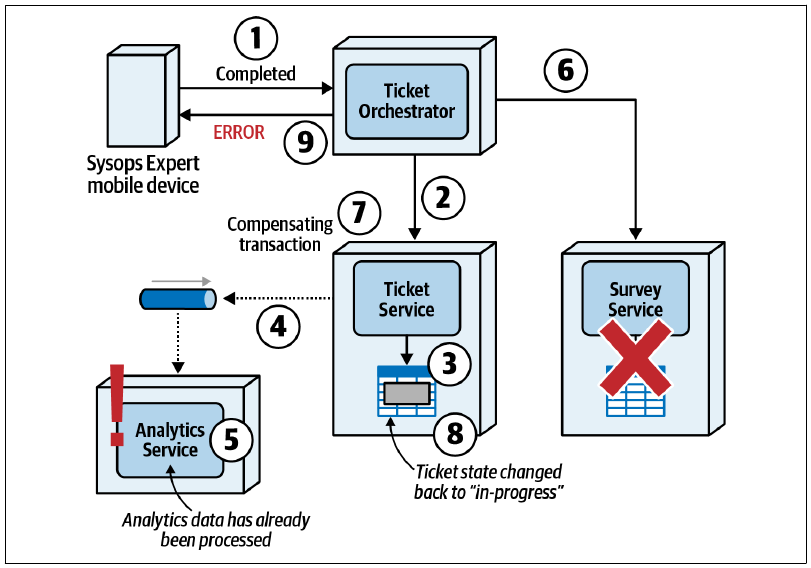
“我们把这种情况称为分布式架构中的副作用。反转工单服务中的事务时，其他服务利用先前更新数据执行的操作可能已经发生，而且无法反转。这个场景说明事务隔离非常重要，而分布式事务并不支持它。为了解决这个问题，工单服务可以通过数据泵再向分析服务发送一个请求，要求它忽略先前的工单信息；但想象一下，分析服务为了处理这种补偿变更，需要多少复杂代码与时序逻辑。更何况，分析服务处理完分析数据后，可能已经触发更多下游操作，使需要反转和修正的事件链更加复杂。在分布式架构和分布式事务中，有时真的是一层之下还有一层，没完没了。”
Logan 停了一会儿，然后继续：“另一个问题——”
Austen 打断他：“还有问题？”
Logan 笑了。“补偿更新的另一个问题，是补偿本身也可能失败。仍然考虑完成工单的史诗 Saga 示例。图 图 12.24 第 7 步向工单服务发出补偿更新，要求把状态从‘已完成’改回‘处理中’。可是这一次，工单服务在尝试更改工单状态时产生错误，也就是第 8 步。”
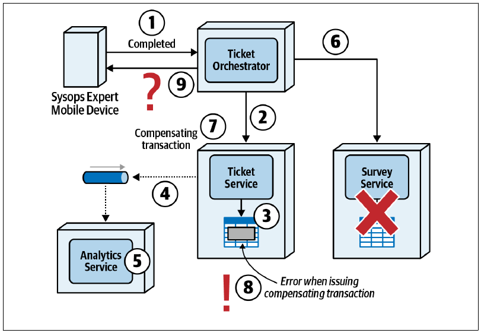
“我见过这种情况！我们花了很久才找到原因。”Addison 说。
“架构师和开发人员往往假定补偿更新总能成功，”Logan 说，“但有时并非如此。图 图 12.24 展示的情况中，应该向最终用户——这里就是 Sysops Squad 专家——返回什么响应，会变得很混乱。补偿失败后，工单状态已经标记为已完成，所以再次尝试‘标记为已完成’请求，可能只会造成另一个错误，例如‘工单已经标记为已完成’。最终用户一定会糊涂。”
“我能想象开发人员来找我们，问该怎样解决。”Addison 说。
“开发人员经常能检验架构方案是否不完整或令人困惑。如果他们感到困惑，通常是有充分理由的，”Logan 说，“好，再说最后一个问题。原子分布式事务及其补偿更新还会影响响应速度。如果发生错误，系统必须先通过补偿更新完成全部修正操作，才能向最终用户返回错误响应，用户只能一直等待。”
“改成最终一致性，就能改善响应速度，对吗？”Austen 问。
“是的。有时可以通过最终一致性异步发出补偿更新，例如并行 Saga 和选集 Saga，以改善响应速度；但多数原子分布式事务一旦涉及补偿更新，响应速度还是更差。”
“明白了——原子协调总会有开销。”Austen 说。
“信息很多。我们做一张表，总结原子分布式事务和补偿更新的一些权衡。”见表 表格 12.12。
12.4.1 权衡
| 优点 | 缺点 |
|---|---|
| 所有数据都恢复到以前的状态 | 没有事务隔离 |
| 允许重试和重新启动 | 补偿时可能产生副作用 |
| 补偿可能失败 | |
| 最终用户响应速度差 |
Logan 说：“补偿事务模式虽然存在，却也带来许多挑战。谁能说出一个？”
“我知道：服务可能无法回滚，”Austen 说，“如果某项服务无法成功撤销先前操作怎么办？协调器必须包含协调代码，表明事务没有成功。”
“没错。还有呢？”
“究竟要不要锁定参与的服务？”Addison 说，“中介者调用一项服务并更新值后，还会继续调用工作流中的后续服务。可是，如果对第一项服务又出现一个请求，并且依赖第一个请求的处理结果，会怎么样？这个新请求可能来自同一个中介者，也可能来自不同上下文。如果调用是异步而不是同步，这个分布式架构问题会更加严重，传话 Saga（sac）就是例子。另一种做法是中介者要求其他服务在工作流进行期间拒绝调用。这样可以保证事务有效，却会摧毁性能与可扩展性。”
Logan 说：“正确。我们从哲学角度想一会儿。从概念上讲，事务迫使所有参与者停下各自的世界，在某个特定值上同步。用单体架构与关系数据库对此建模太容易了，以至于架构师在这些系统中过度使用事务。现实世界中的许多事情并非事务性的；Gregor Hohpe 的著名文章《星巴克不用两阶段提交》（Starbucks Does Not Use Two-Phase Commit）就观察到了这一点。事务协调是架构最难处理的部分之一，范围越广，情况就越糟。”
“除了史诗 Saga，还有其他选择吗？”Addison 问。
“当然！”Logan 说，“对图 图 12.24 所述场景，更现实的方式可能是采用童话 Saga 或并行 Saga。发生错误时，这些 Saga 依赖异步最终一致性与状态管理，而不是使用补偿更新的原子分布式事务。采用这类 Saga，分布式事务中发生的错误对用户影响较小，因为错误在后台解决，不需要最终用户参与。状态管理与最终一致性也有更好的响应速度，因为用户不必等待分布式事务执行修正操作。如果原子性出现问题，可以把这些模式作为替代方案研究。”
“谢谢，内容很多，但现在我明白架构师为什么在新架构中做出其中一些决策了。”Addison 说。